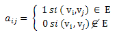
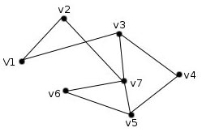
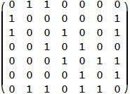

Llamamos matriz de adyacencia de G=(V,E) a la matriz nxn, A=(aij), donde:

Ejemplo:

Mirar la ayuda del algoritmo BFS o DFS.
Este diálogo le permite modificar la matriz de pesos del grafo para así etiquetar de forma rápida un gran número de aristas/arcos. El peso debe ser un valor numérico.
Utilizar la matriz de pesos es muy sencillo, para etiquetar una arista/arco (i,j) basta con situarse en la celda intersección entre la fila i y la columna j, y poner en esta posición el valor deseado para el peso de la arista/arco.
Para validar este nuevo valor basta con seleccionar una nueva celda de la matriz o pulsar la tecla intro, lo que automáticamente guarda el cambio realizado.
Al cerrar la ventana las actualizaciones se trasladan al dibujo del grafo.
Etiquetar una arista/arco con peso 0.0 equivale a su borrado.
Grafos No Dirigidos
Si estamos dibujando un grafo no dirigido y queremos modificar el peso de una arista, tenemos que tener en cuenta que si modificamos el valor (i,j) automáticamente se actualiza con el mismo valor la casilla (j,i).
Grafos Dirigidos
Cada posición de la matriz de adyacencia corresponde con un arco del grafo, por lo que al modificar el peso de la casilla (i,j), no se modificará de forma automática ninguna otra.
Llamamos matriz de multiplicidades de G a la matriz nxn, A=(aij), donde cada valor indica el número de aristas (arcos) que van desde el nodo i al nodo j.
Esta matriz se utiliza en el algoritmo de Hierholzer para especificar los s-grafos.
Para introducir una matriz de multiplicidades se rellena la matriz del grafo (menú superior) y cuando se selecciona algoritmo de Hierholzer la matriz pasa automáticamente a considerarse matriz de multiplicidades.
Llamamos matriz de capacidades de G a la matriz nxn, A=(aij), donde cada valor indica la capacidad de la arista (arco) que va desde el nodo i al nodo j.
Esta matriz se utiliza en el algoritmo del flujo máximo para especificar la función capacidad asociada al grafo dibujado.
Para introducir una matriz de capacidades se rellena la matriz del grafo (menú superior) y cuando se selecciona algoritmo de Ford Fulkerson la matriz pasa automáticamente a considerarse matriz de capacidades.